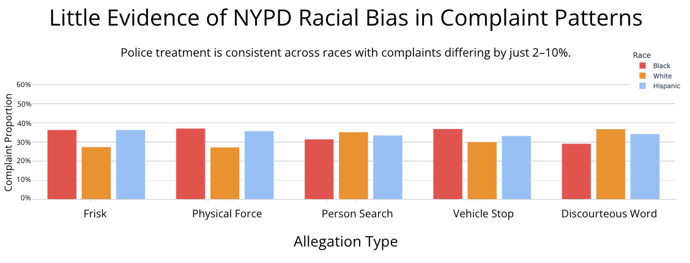

Proposition: The NYPD Disproportionately Targets Black New Yorkers Compared to Other Racial Groups.
FOR the Proposition
Design Decisions and Rationale:
- Bolded Statistics immediately serve as a hook and highlight the disparities as it is difficult to grasp the data from the bar chart. I acknowledge that the red text and size are visually dramatic and could exaggerate the data by oversimplifying it. However, this was intentional as I wanted to grab the reader's attention as fast as possible and reinforce my point. While I did consider using black/gray text for a more relaxed tone, I felt that it did not convey my point as strongly as the red. I accepted the tradeoff in subtlety for stronger persuasion. (Score: 0.5)
- Red color on the bar chart emphasizes the higher proportions on black complaints. While this choice might bias the viewer emotionally, I intentionally used it to draw attention by contrasting it from the other gray bars. This significant color difference would also help viewers quickly determine the sheer scale of difference. I considered using lighter pastel palettes such as the colors from my graph below, but they presented too many colors and weakened the persuasive impact. In the context of focusing attention and argumentative visualization, I believe red was a good choice despite its potential bias. (Score: 1.5)
- A strongly worded title frames the viewer perspective from the start. Instead of phrasing my title with neutral words such as "suggests" or "hints", I choose a direct statement of "Point to" to establish a confident and persuasive tone. This was to guide the viewers interpretation and understanding of my point before they even look at the graph. I did consider more passive and suggestive tones, but those titles sounded too passive and did not fit my argumentative goal. While it may immediately turn my audience skeptical with its declarative nature, I wanted to assert my point clearly. (Score: 1)
- Citing the data source in the bottom right corner builds trust and credibility. This was included to establish the legitimacy of my data and helps reassure viewers that my rather forward claims are based on real, public records. Even though this small, just having the dataset increases transparency and can help reduce a little skepticism I built into the visualization. This was something I added in at the end after I realized my argument might have come off too strong and that I would need some credibility. (Score: 2)
AGAINST the Proposition

Design Decisions and Rationale:
- Making y-axis taller to make bars appear shorter. By increasing the y-axis to go up to 60%, I made all bars appear closer in height and visually minimized their differences. Since the actual differences ranged from 2-10%, by stretching the axis I reduced the perceptual weight of those gaps. By lessening the differences, I made the data seem more uniform and could support the argument of equality. Even though this is not full deception, it introduces visual distortion and clouds perception. (Score: -1)
- Resampled 2000 rows per race to equalize distribution. The original dataset was very skewed toward black complainants with significantly less rows for white and hispanic groups. To counter this, I sampled 2000 entries from each group which created an artificially balanced dataset. This choice completely violates data integrity by throwing away real world proportions in favor of equal representation. Since this altered the data, it allowed me to generate a clean, symmetric visual for my argument. This was done intentionally as I was seeking to force the storyline, making this decision fully deceptive. (Score: -2)
- Cherry-picked most equal allegations to display. After resampling, I selectively chose only the allegations that showed nearly equal complaint rates across races. Prior, I chose allegations based on how common it was, but these were to intentionally force my story and omit the ones that did not support my message of equality. This decision was a strategic act to show data agreement with my story rather than present a fair representation of the data and guide the reader to a predetermined conclusion. While my data is not incorrect, it does not present the data holistically and is thus deceptive. (Score: -1.5)
- Used bright and soft colors to avoid highlighting any particular bar. To support the story of equality, I avoided bold/saturated colors like red. Instead, I used neutral and pastel colors for each race to avoid drawing disproportionate attention. I made this choice to highlight fairness and also to make sure readers do not tie race to any color scheme. While this my soften the impact of the message, it agrees with my story of racial equality.I did consider matching the color scheme from my first graph by using red to highlight black conplainants, I thought it would be better to be more colorful to signify equality. I believe that this design choice supports clarity but lacks something that grabs the eye. (Score: 0.5)
Final Reflection
Working on this project made me realize how difficult it is to come up with two equally persuasive arguments for the same dataset. While building the “for” side was relatively easier, I found it challenging to find honest evidence to convincingly support the opposing view. After a while, I resorted to manipulating the fairness of the data through sampling and selective framing. It was surprisingly simple to cherry-pick what I was looking for and present that as facts while hiding the manipulation behind the scenes.
For me, this project highlighted what an ethical visualization looks like. I now would define an ethical visualization based on its context and transparency,, since a graph cannot show how the data was selectively filtered or manipulated. This rests on the visualizer to provide enough documentation to show what was omitted and how choices were made. Without clear documentation, no matter how nice a visualization may appear, its narrative could be heavily biased.
One boundary I can draw to distinguish acceptable persuasive choices vs. misleading ones is the intention behind it. I believe design is acceptable when it is there to clarify and emphasize, but it becomes extremely misleading when it consoles, distorts, or subtly simplifies. In the end, ethical visualization involves persuasion with boundaries - choices should enhance understanding without changing what the full dataset supports. This project has shown me how difficult that boundary can be to walk and how important it is to be aware of it.